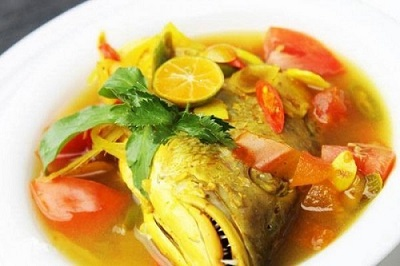

Pallumara

Masakan khas Makasar yang berbahan ikan dan Sup kuah bumbu kunyit ini berasal dari dari bahasa Makassar,
Pallu berarti masakan sedangkan Mara berarti asam. Pallu Mara memiliki cita rasa segar dan gurih dan
resep Pallu Mara dapat menjadi variasi sajian dalam bentuk hidangan ikan Bandeng, lho! Selain Bandeng,
dapat diganti juga ikan Tongkol atau jenis ikan sesuai selera. Nah, kalau kamu tertarik untuk memasaknya,
berikut resep Pallu Mara, makanan khas Makassa.
Resep Pallumara
Bahan-bahan yang diperlukan:
~ 300-400 gr ikan Bandeng. Cuci bersih, potong-potong
~ 3 buah keluwak, ambil daging buahnya,lalu rendam dengan air panas sampai lunak, tiriskan dan haluskan
~ 1 sdm asam jawa, larutkan dalam air
~ 1 sdt kunyit bubuk
~ 4 siung Bawang merah, cincang kasar
~ 1 siung Bawang putih, cincang halus
~ 1 ruas jahe, geprek
~ 3 batang daun bawang, iris serong
~ 2 sdm Minyak goreng (dapat diganti dengan minyak sayur, minyak zaitun atau minyak bunga matahari ,sesuai kebutuhan)
~ Garam Gula secukupnya
~ 1 buah Cabe hijau besar
~ 350 ml air atau sesukanya, pengin kuahnya banyak
~ 5 lembar daun jeruk, buang tulang daunnya
Cara membuat:
~ Pertama, bersihkan dahulu ikan bandeng, kemudian potong-potong sesuai selera. Lumuri ikan dengan campuran bumbu bersama air asam jawa dan keluwak, sisihkan.
~ Setelah 15 menit, panaskan panci isi ikan tadi. Setelah mendidih tambahkan air
~ Tumis bawang merah + bawang putih + jahe + daun jeruk purut + daun bawang hingga harum
~ Setelah panci ikan mendidih kembali, tuangkan tumisan bumbu ke dalamnya. Masukkan juga cabe hijau besar dan kunyit
~ Aduk-aduk sebentar
~ Tambahkan garam dan gula secukupnya sesuai selera
~ Masak menggunakan api bertekanan kecil hingga matang, angkat dan masakan Pallu Marra siap disajikan.
Sumber: IDN TIMES - recipe - resep pallumara